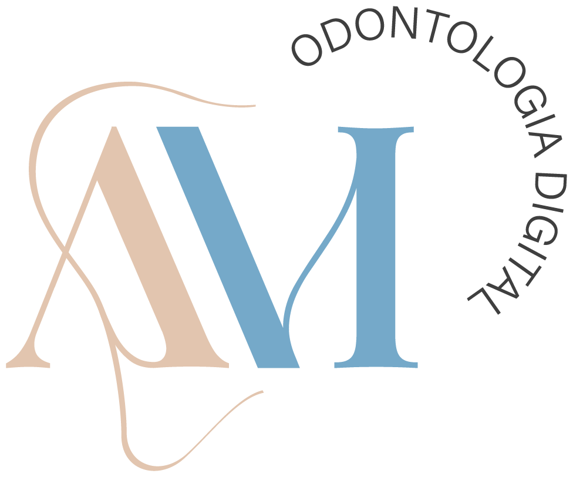
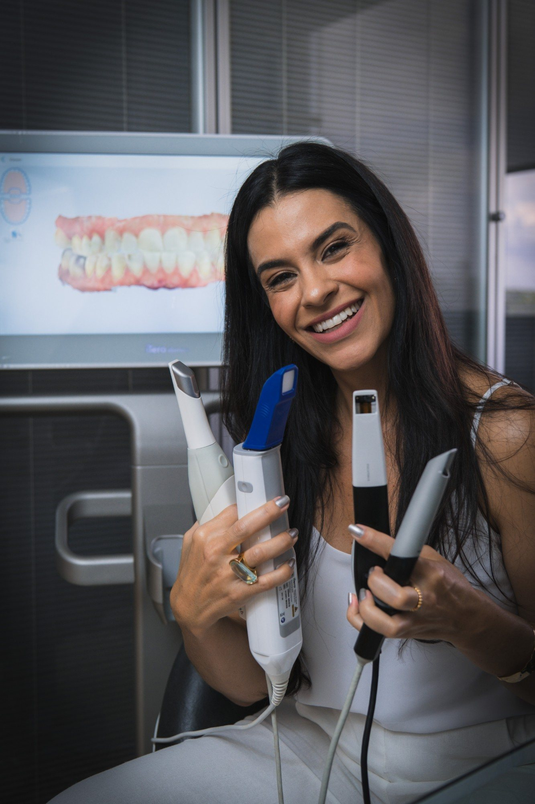
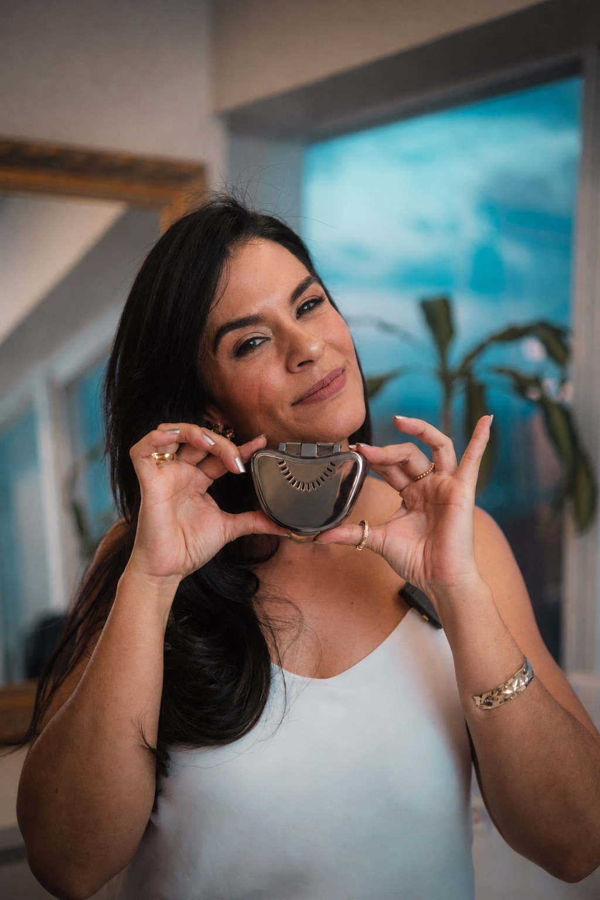

Eu te ensino o protocolo que acaba com a repetição, com a prova devolvida pelo laboratório e com a insegurança no implante. Mentoria individual em escaneamento intraoral e fluxo digital, baseada em mais de mil bocas escaneadas.

Isso não é falta de competência. É falta de um protocolo padronizado para conduzir o fluxo digital do começo ao fim. E protocolo se aprende.
Capturas falhas que exigem repetição e consomem o tempo do atendimento.
Comunicação que falha gera atraso, custo extra e insatisfação dos dois lados.
Dúvida sobre scanbody e posicionamento compromete o resultado do caso.
Recursos do scanner ficam esquecidos por falta de orientação prática.
Cada repetição é tempo de cadeira. Cada prova devolvida é custo e paciente esperando. O scanner parado é o item mais caro da clínica.
O scanner não substitui a técnica. Ele potencializa quem sabe conduzir o fluxo digital com segurança.
A arcada fecha de primeira, e você sabe por quê.
O caso de implante entra no digital sem aquele frio na barriga.
O laboratório recebe o arquivo certo e a peça volta sem ajuste.
O paciente sai mais cedo, mais confortável, e percebe que a clínica é moderna.
Não é promessa de máquina nova. É o mesmo scanner que você já tem, finalmente rendendo o que você pagou por ele.
Técnica própria de padronização, construída em mais de mil bocas escaneadas e válida para qualquer scanner. Você aprende a ordem, o porquê de cada passo e como corrigir no meio do caminho.
Campo seco e isolado, instrumentos prontos.
Escaneamento sistemático, sem pular região.
Mesma lógica, mesma previsibilidade.
Captura precisa da oclusão em máxima intercuspidação.
Verificar e corrigir falhas em tempo real, antes de enviar.
Você sai sabendo o que realmente precisa ser enviado para o laboratório executar o trabalho com segurança, como organizar e como evitar o ruído que gera atraso.
Um dentista que domina o fluxo digital entrega resultados superiores. E o paciente percebe a diferença.
Sem turma, sem aula genérica, sem sair da sua rotina. O foco total é a sua dificuldade e a aplicação prática do fluxo digital completo.
Eu vou até você e conduzo o escaneamento no seu atendimento, com o seu scanner e o seu paciente.
Atendo outras cidades, desde que o deslocamento fique a cargo do dentista.
Acompanhamento individual e ao vivo, com a prática guiada por mim, e revisão da sua malha depois para corrigir o que ainda trava.
Mesmo número de períodos e o mesmo follow-up do presencial.
Prática direta no seu atendimento (presencial) ou guiada ao vivo (online), com treino em modelo quando o caso pede.
Protocolos específicos para cada situação clínica, com orientação sobre scanbodies.
Padronização do envio de arquivos para eliminar falhas e retrabalho.
Domínio dos recursos do equipamento para otimizar cada atendimento.

Eu atuo há anos com odontologia digital, escaneamento intraoral e suporte a dentistas de diferentes especialidades. Já passei por mais de mil bocas escaneadas, em vários equipamentos, vendo as duas pontas do fluxo: a clínica e o laboratório.
Foi assim que desenvolvi uma técnica própria de padronização, com foco em previsibilidade, agilidade e menos retrabalho.
Eu não ensino apenas teoria. Eu ensino o caminho. Eu dou direção.
O protocolo é o mesmo para qualquer scanner. A mentoria atende quem tem equipamento de qualquer marca.
Eu repetia a arcada três vezes por caso. Hoje fecho em uma e o laboratório parou de devolver prova.Dr(a). [Nome] · [especialidade] · [cidade]
Eu fugia de implante no digital. Agora conduzo o scanbody com segurança.Dr(a). [Nome] · [especialidade] · [cidade]
O laboratório me elogiou pela organização do arquivo.Dr(a). [Nome] · [especialidade] · [cidade]
O treinamento do fabricante costuma ensinar o software. A mentoria ensina o protocolo clínico: sequência, implante, scanbody e envio ao laboratório.
Sim. O protocolo é padronizado e vale para qualquer equipamento. Eu já trabalhei com várias marcas.
Faz, se a malha ainda volta com falha, se o laboratório devolve prova ou se implante ainda é motivo de insegurança. A mentoria parte do seu nível, não do zero.
Dá. A mentoria online atende dentistas de todo o Brasil, com videochamada ao vivo e revisão da sua malha depois. Se preferir presencial na sua cidade, também é possível, com o deslocamento a cargo do dentista.
Funciona porque o que se ensina é protocolo e critério: a sequência, onde errar e como corrigir. Eu guio você ao vivo e, depois, reviso a sua malha para apontar o que ainda trava.
São três períodos, mais um follow-up, e as datas são combinadas com a sua agenda.
Ele pode participar da mentoria com você. Conversamos pelo WhatsApp sobre as condições.
Por isso eu estou do seu lado, conduzindo cada passo. Você aprende fazendo, com orientação em tempo real.
Depende do formato e de quantas pessoas participam. Me chama no WhatsApp que eu te passo os valores.
Me conta qual scanner você usa e onde está a sua maior dificuldade. Eu respondo pessoalmente e te digo se a mentoria faz sentido para o seu momento.
Prefere falar direto? Chamar no WhatsApp · @ananda_odontodigital